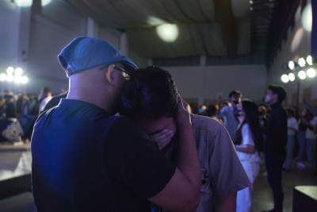
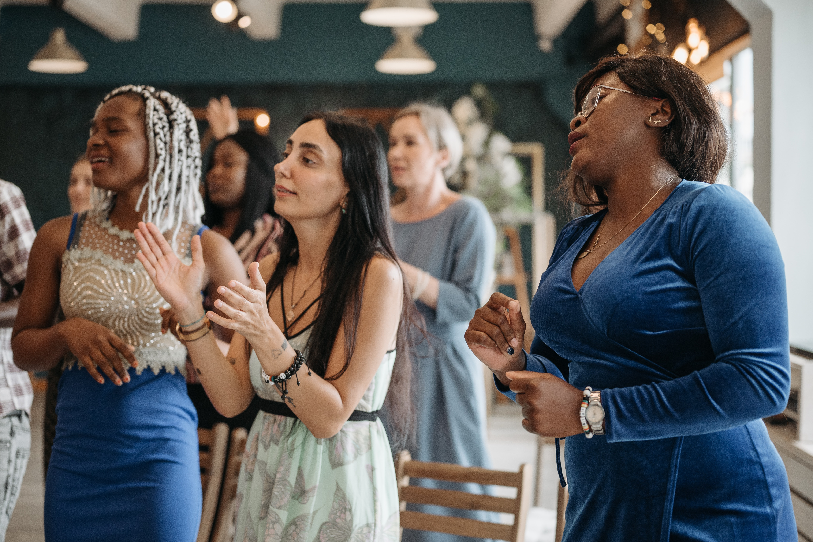
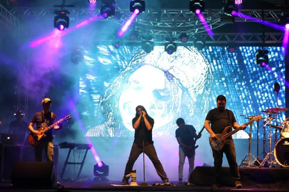

Ministérios
Adultos
Este ministério existe para adultos que buscam desenvolver relacionamentos com outros adultos e crescer na graça, no amor e no conhecimento do nosso Senhor Jesus Cristo, por meio de estudo e prática da Palavra de Deus, oração, comunhão e louvor. Os encontros são mensais.
Juventude
O propósito do ministério de jovens é levar adolescentes à um relacionamento crescente com Deus e comunicar Cristo por meio de suas vidas. Para isso, o grupo desfruta de tempo de ensino baseado na Palavra de Deus, contando com um material desenvolvido para suas necessidades e faixa etária, comunhão, discipulado, adoração e serviço a Deus.
Casais
O propósito do ministério de casais é o fortalecimento e crescimento espiritual, bem como o equilíbrio emocional e relacional da família, oferecendo suporte e ferramentas para a formação e educação dos filhos e possibilitando a integração na igreja para toda a família.
Homens
O objetivo do ministério de homens é criar intimidade entre os homens também fora do espaço da igreja. Dessa forma, os homens se sentem mais confortáveis para compartilhar suas angustias, problemas pessoais e pedidos de oração, possibilitando ao grupo se ajudar mutuamente.
Mulheres
O ministério de Mulheres tem o objetivo de criar um espaço que as permita compartilhar sobre suas vidas, bem como estudarem juntas a palavra de Deus, por meio de reuniões em pequenos grupos. Além disso, o grupo de mulheres também se reúne com passeios diversos e, anualmente, com um retiro, realizado durante um final de semana.
Louvor e Adoração
Dirigir os momentos de louvor e adoração congregacional, providenciar um consistente nível de celebração a Deus, por meio de músicas que exaltam o Nome do Senhor e tocam o coração das pessoas, ministrar à igreja a visão de decência e ordem durante os serviços prestados ao Senhor, promovendo liberdade de expressões do louvor a Deus, são os nossos propósitos com o ministério de Louvor.
